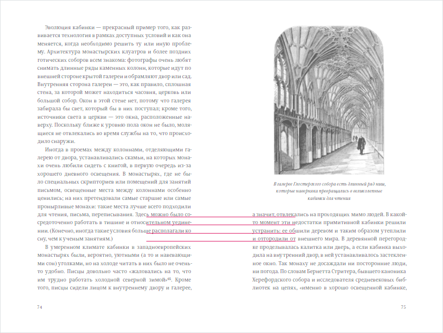
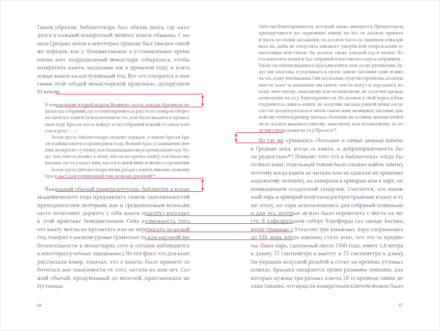

Верстать хорошо так, чтобы расстояния между строками были кратны одну и тому же базовому значению. Это называется вертикальным ритмом.
Например, высота строк этого текста — 24 пикселя, и отсуп между абзацами тоже 24 пикселя, чтобы ритм не сбивался. У крупных заголовков высота строки ровно в два раза больше: 48 пикселей — и ритм снова сохраняется.
Вертикальный ритм пришел из книг, где хочется, чтобы строки на левой и правой сторонах разворота «сидели» на одних и тех же базовых линиях. Как, например, в этом издании «Книги на книжной полке» Генри Петроски, строки аккуратно выровнены по базовым линиям:

Но иногда все-таки приходится вставить на полосу врезку с высотой строки, не кратной базовой. Как тогда сохранить вертикальный ритм? В этой книге общую высоту врезки «добивают» до кратной базовой за счет дополнительных отсупов до и после. Обратите внимание на различный размер отступов у врезок на этом развороте:

Таким образом и в этой ситуации вертикальный ритм удается сохранить. Отличный прием!
Крутость jspm
Эту версию сайта я делал, используя пакетный менеджер для яваскриптового фронтэнда jspm — и мне понравилось. Вот почему.
Обычно для получения фронтэндовых пакетов используют Bower. Для удобного использования Bower-пакетов с загрузчиком модулей приходится использовать заклинания вроде grunt-bower-requirejs, чтобы конфиг с путями к модулям для RequireJS создавался автоматически.
В отличие от Bower, который фактически умеет только скачивать пакеты, jspm изначально создавался с расчетом на использование загручика модулей SystemJS. При инициализации проекта SystemJS скачивается автоматически, а при установке пакетов они сразу прописываются в конфиг. Пакеты устанавливаются с гитхаба и из npm, плюс ведется модерируемый реестр. Как бонус, появляется возможность использовать ES6.
jspm умеет собирать код в один файл. Делаем jspm bundle-sfx — и получаем единственный файл для использования на продакшене вообще без загрузчика модулей, только, почему-то, не минифицированный.
Таким образом, четыре инструмента (Bower, RequireJS, RequireJS Optimizer и grunt-bower-requirejs) заменены одним jspm. Мне не хватает только встроенной склейки и минификации CSS (как в оптимизаторе RequireJS), тогда Grunt стал бы совсем не нужен. Но пока без сборщика не обойтись.
<html>
<head>
<meta charset="UTF-8">
<title>My Super App</title>
<link rel="stylesheet" href="css/site.css">
</head>
<body>
...
<!-- Код ниже — стандартный при использовании jspm:
подключаем загрузчик и конфиг, загружаем основной модуль: -->
<!-- build:script js/site.js -->
<script src="jspm_packages/system.js"></script>
<script src="config.js"></script>
<script>
System.import('js/main');
</script>
<!-- /build -->
</body>
</html>
Gruntfile первым делом выполняет команду jspm bundle-sfx js/main build/js/site.js в командной строке. jspm анализирует зависимости модулей друг от друга и создает файл site.js в подпапке build/, содержащий объединенный код всех используемых модулей в правильном порядке.
Теперь было бы здорово автоматически заменять в HTML-файлах все теги <script> на единственный тег с подключением минифицированного файла site.js. Хорошо, что для этого придумали плагин grunt-processhtml! Если окружить теги <script> специальными комментариями (как мы и сделали в файле index.html):
Более того, если добавить к спецкомментариям слово inline, то скрипт или таблица стилей будет встроена прямо в файл — еще меньше запросов к серверу! C такими поправками файл станет полностью самодостаточным:
Такой воркфлоу я использую для публикации этого сайта.
Игги Поп на BBC Radio 6 Music
Игги Поп ведет очень годный музыкальный эфир на BBC Radio 6 Music. Официально слушать эфиры в записи можно только через BBC iPlayer, что не всегда удобно. Я сделал сайт, куда выкладываются записи эфиров и трек-листы:
Технологии: Backbone, RequireJS, Mustache, иконочный шрифт (использую IcoMoon App, крутой инструмент), HTML5 Audio (написал клевую обертку над стандартным HTMLMediaElement, расскажу в следующий раз).
Проект поддерживается моими силами, новые эпизоды могут появляться с задержкой.
Irn Bru
Попробовал напиток, постоянно попадавшийся на глаза, но который до этого ни разу не покупал: Irn-Bru — второй по известности шотландский напиток после скотча. Необычно, и grows on you. Вот еще напиток с названием из двух слов по три буквы: Mnt Dew.
Загрузка твитов яваскриптом без авторизации и смс
Текущий REST API Твиттера требует обязательной авторизации. Это неудобно и глупо, например, для чтения твитов из открытого аккаунта авторизация явно лишняя.
Зато при использовании виджетов авторизация не требуется, что дает возможность получить последние твиты пользователя (не более 20) чисто клиентским яваскриптом. Идея в том, чтобы загрузить виджет в скрытый контейнер на странице, а потом распарсить его содержание. Моя небольшая библиотека это и делает, использовать ее можно так:
Здесь первый параметр — ID виджета, созданного в настройках профиля, второй параметр — количество твитов для загрузки. Все работает асинхронно и возвращает jQuery Deferred, который разрешается массивом твитов.